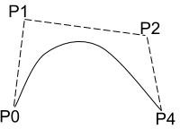
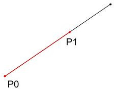
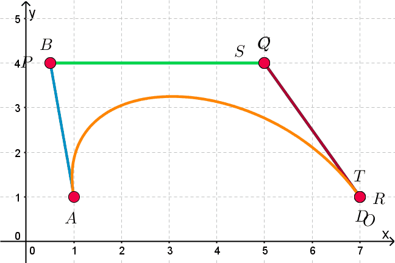

Splines -- 3/3/2020
Curves (cubic) that appeared to be smooth/continuous
Bezier
Defined By: 2 Endpoints (P0, P3)
2 Influence Points(P1, P2)

Influence points pull the curve
Quadratic curve would only have on influence point
Line
 Pt = (1 - t)P0 + tP1
Quadratric
 Q0 = (1 - t)Q0 + tQ1
Q0 = (1 - t)Q0 + tQ1
Q0t = (1 - t)P0 + tP1
Q1t = (1 - t)P1 + tP2
Qt = (1 - t)[(1 - t)P0 + tP1] + t[(1 - t)P1 + tP2]
Qt = (1 - t)2P0 + 2t(1 - t)P1 + t2P2
Cubic

O = (1 - t)S + tT
S = (1 - t)2A + 2t(1 - t)B + t2C
T = (1 - t)2B + 2t(1 - t)C + t2D
O = (1 - t)[(1 - t)2A + 2t(1 - t)B + t2C] + t[(1 - t)2B + 2t(1 - t)C + t2D]
O = (1 - t)3A + 3t(1 - t)2B + 3t2(1 - t)C + t3D
(-A + 3B - 3C + D)t3 + (3A - 6B + 3C)t2 + (-3A + 3B)t + A
Form: at3 + bt2 + ct + d
Hermite
Defined By: 2 endpoints: P0, P1
Rates of change at each endpoint : R0, R1
Hermite curves are better when you're typing instructions rather than clicking and drawing things
f(t) = at3 + bt2 + ct + d Points on curve
f'(t) = 3at2 + 2bt + c Rates of change
f(0) = d P0
f(1) = a + b + c + d P1
f'(0) = C R0
f'(1) = 3a + 2b + c R1